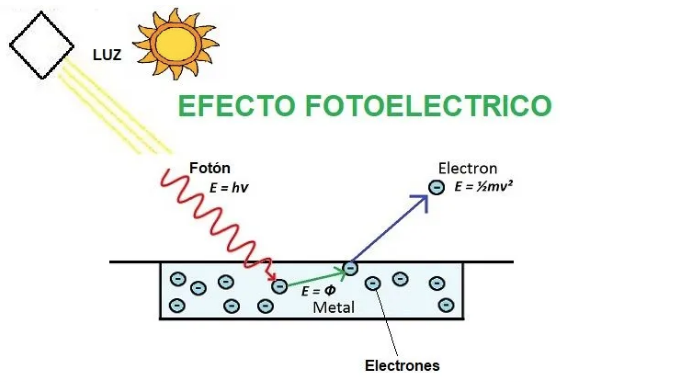

Efecto Fotoeléctrico

Efecto Fotoeléctrico
Un fenómeno en el que los electrones son expulsados desde la superfi cie de ciertos metales que
han sido expuestos a luz de una determinada frecuencia mínima, y que se conoce como
frecuencia umbral. El número de electrones liberados, no su energía, era pro
porcional a la intensidad (o brillantez) de la luz. No importaba qué tan intensa fuera la luz,
los electrones no se liberaban cuando la frecuencia no llegaba a ser la umbral.
La teoría ondulatoria de la luz no podía explicar el efecto fotoeléctrico, pero Einstein
partió de una extraordinaria hipótesis al considerar que un rayo de luz es, en realidad, un
torrente de partículas.
Se explica con la fórmula:
E=hv